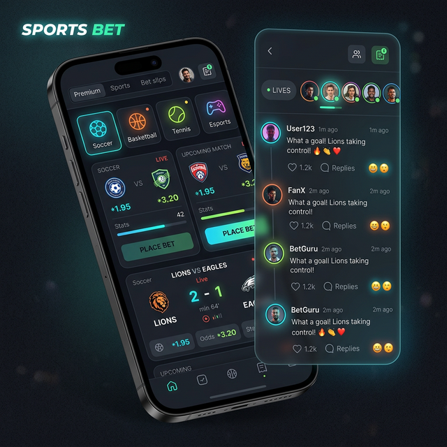

Keep.social
Adding social layers to high-traffic enterprise products, turning legacy isolation into scalable community engagement.
Read Case Study
Navigating Legacy & Bureaucracy
Keep.social worked with large enterprise organizations, particularly in the sportsbook sector. Building modern features into these environments presented multiple hurdles:
- Legacy Systems: Old-fashioned workflows deeply embedded in the business.
- Low UX Maturity: Parts of the organization lacked a user-centric development culture.
- Bureaucracy: Heavy silos and cross-team dependencies slowed down releases.
The Underlying Problem
Existing products handled millions of users but completely lacked a cohesive social interaction system. User value opportunities like community discussion and return behavior were under-leveraged. Product teams desperately needed reusable social patterns that could scale across multiple industries (from sportsbooks to retail prototypes like IKEA and Lindex).
Success required not just strong independent design execution, but significant stakeholder alignment and UX advocacy.
End-to-End Execution
My role bridged strategy and delivery: taking abstract business objectives and turning them into implementable, polished UX.
1. Discover & Research
Understood behavior, technical constraints, and priorities. Ran quantitative and qualitative user research and synced with data analysts to pinpoint real user needs.
2. Map & Design
Defined high-impact social moments in the journey. Designed end-to-end interaction flows, created personas, and built patterns for feeds, reactions, and group chats.
3. Prototype
Rapidly built high-fidelity UI concepts and AI-assisted prototypes (mobile-first) to visually align stakeholders and show the potential impact.
4. Align & Lead
Communicated directly with the CEO and joined customer-facing sales discussions. Validated concepts early to mitigate risk and mentored global design teams.
5. Deliver
Handoff with implementation clarity and design consistency. Solved complex bureaucratic blocks without losing product momentum.
Cross-Functional Hub
Collaborating fluently with the Design Team, CEO, Head of Product, Data Analysts, and Engineers.
Meaningful Scale
& Adoption
We successfully delivered socialized product experiences centered on feed-like surfaces, group-chat patterns, and intuitive discovery.
These patterns were highly scalable and became reusable assets for enterprise prototypes beyond just the sportsbook vertical.
Why this demonstrates Seniority:
- Owned the full lifecycle, stretching beyond just UI screens.
- Operated fluidly between execution, strategy, and executive communication.
- Delivered a robust design system that scaled past a single use-case.
Social interaction reached meaningful scale across the initial product pilot.
Placeholder: Demonstrating increased product stickiness via social layers.
Social patterns rolled out to multiple enterprise prototypes.